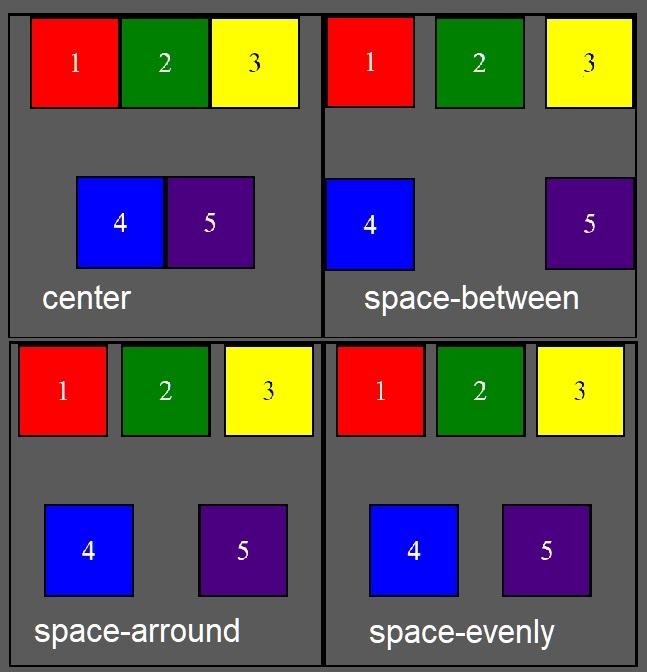

Esta web te enseña los pasos que debes seguir para convertirte en un desarrollador web. Lo primero que debes saber es que no es un camino largo, son 3 ja. Se deben aprender 3 lenguajes de programacion, HTML, CSS Y JAVASCRIPT. Cada lenguaje tiene sus propia semantica y caracterisitcas. HTML da el esqueleto de nuestro sitio. CSS da la forma, el color los detalles la posicion y demas caracteristicas visuales del sitio. Javascript da la interactividad, la posibilidad de enviar y recibir datos por parte del usuario, incluso crear juegos y todo tipo de otras cosas junto con los otros dos lenguajes
Lo primero sera conocer las bases de HTML. Aunque en lrealidad lo mejor seria ir aprendiendo los 3 lenguajes a la vez, en su aspecto mas basico. En el inice está plasmado cual es el orden recomendado para encarar el camino. tener en cuenta que mientras mas se avanza mas complejos seran los temas y sera necesario haber aprendido los conceptos anteriores. asi que sin mas, Emepcemos este camino y buena suerte.
Bases de HTML
¿Que es HTML?
Este articulo desdse los fundamentos conceptuales basicos. En articulos posteriores me enfoco en conceptos cada vez mas avanzados. El objetico es crear un sitio utilizando lo aprendido y al mismo tiempo dejar un registro para poder recordar de manera rapida conceptos q pueda olvidar con el tiempo.
HTML es un lenguaje de programacion que esta estructurado por etiquetas. La sintaxis basica es: etiqueta texto etiqueta. las etiquetas a su ves pueden tener una o mas etiquetas dentro suyo y esta a su vez tambien, formando una especie de arbol donde cada etiqueta tiene un padre y puede tener varios hijos. Usando esta ruta "genealogica" puede accederse a cualquier elemento del archivo.
Aprendiendo CSS
Propiedad Flex box
flex-box es uno de los valores que puede tomar la propiedad dispaly y se caracteriza por que todos los elementos dentro del contenedor adoptan una organizacion bastante peculiar. Al inicio, antes de que se den nuevos valores a las propiedades flex, si el tamaño de los contenedores no ha sido definido, estos se estiran equitativamente de manera que el tamaño de todos es el mismo y ocupan todo el ancho de la pagina. Si el ancho de la pagina cambia tambien el tamaño de los contenedores hijos
flex-direction
Lo primero que debemos entender es que una vez que el contenedor padre toma el valor de flexbox en su propiedad de diplay, en este se forman 2 ejes ortogonales, uno vertical y otro horizontal cada uno con una direccion. Para definir cual es el eje principal y cual es la direccion que toma se utiliza la propiedad flex-direction. Esta propiedad puede tomar 4 valores:
row (fila en ingles) para señala al eje horizontal como principal, los elementos se van alineando de izquierda a derecha.
row-reverse Es lo mismo que el primero solo que los items se alinean de derecha a izquierda.
column señala al eje vertical como principal y los elementos se alinean de arriba hacia abajo.
column-reverse Es similar al anterior pero los elementeos se ordenand de abajo hacia arriba.Por defecto el eje principal es el horizontal.
Flex Wrap
La segunda propiedad que toca conocer es flex-wrap. Esta propiedad puede tomar solo 2 valores:
wrap: Permite que los elementos contenidos pasen a una segunda fila con su propio eje principald a la vez que subdivide el contenedor padre en tantas partes como filas adicionales (o columnas). Las subdiviciones son iguales y cada eje se comporta como si fuera uno independiete.
no-wrap es el que toma por defecto esta propiedad. Si este es el valor que toma la propiedad, los contenedores hijos se comportan manteniendose en un sola fila (o columba). si el tamaño de los contenedores esta definida estos incluso pueden atravesar el borde del contenedor padre si este no es lo bastante grade para contenerlos. Cuando el tamaño de los contenedores hijos no esta definidos estos se adaptan al contenedor padre estirandose de manera equitativa.
flex-flow
flex-flow: es un atajo que permite definir flex-direction y flex-wrap en una sola propiedad (en ese orden). Por ejemplo: flex-flow: row wrap;
A continuacion veremos la manera de controlar la posicion de este o estos ejes.
Alinear items
La propiedad align-items sirve para definir la ubicacion de los contenedores respecto a el eje secundario. Por ejemplo, en el caso de que flex-direction:row, esta propiedad (aline-items) mueve los elementos hacia arriba o hacia abajo. Recordar que si hay mas de una fila de elementos (o columna, normalmente cuando wrap es activo) el contenedor se subdivide entre el numero de filas (o columnas) y los elementos se ubican dentro de la subdivicion que les correspone como si fuera un contenedor diferente. Esta propiedad puede tomar 5 valores:
flex-start: Alinea los items hacia arriba o a la derecha dependiendo si el flex-direction es row o column. Este es el valor que viene por defecto. Si existe alguna subdivicion los elementos se ubicaran dentro de esta.
flex-end: Alinea los items hacia abajo o hacia la derecha dependiendo si el flex-direction es row o column. Es similar a flex-star pero los elementeos se alienan hacia el lado opuesto.
center: Alinea los items en el centro del eje principal. Si hay alguna subdivicion los elementos se alienan en el centro de la subdivicion.
strech: alinea los elementos como flex-star pero aparte estira los bordes paraleleos al eje principal hasta que ocupan todo el alto (en caso de row) o ancho (en el cso de column) del contenedor padre. Nota: si los contenedores hijos tienen sus dimenciones definidas strech funciona igual que flex-star.
baseline: Alinea los contenedores de tal manera que el texto dentro de los contenedores que de al mismo nivel
Contenido justificado
justify-content desplaza los elementos contendidos en el sientido del eje principal, a difienrecia de la anterior propiedad que causa desplazameintos en sentido perpendicular a este eje.
center: agrupa todos los contenedores hacia el centro del eje principal
flex-star: desplaza todos los contenedores hacia el inicio del eje principal
felx-end: desplaza todo los contenedores hacia el final del eje principal
space-between: separa lo mas posible un contenedor del otro colocandols contra los borders si es ncesario.
space-arround: genera un espacio (margin) al rededor de cada contenedor de igual ancho de maenra que el espacio entre dos contenedores es la suma del espacio de cada uno pero no asi en las paredes q termina tomando la mitad de ese valor.
space-evenly: el espacio generado entre los contenedores y entre lo contenedores y la pared es siepre el mismo

Alineado de Contendio
La propiedad align-content sirve para manejar la distancia entre los ejes principales entre subdiviciones. Es decir, si un contenedor tiene activa la propiedad esta propiedad no hace nada. Puede tomar 4 valores:
center: Junta los ejes principales (EP) de cada subdivision lo mas cerca que puede.
flex-start: Lleca los EP de cada subdivision lo mas arriba (o a la izquierda) que puede.
flex-end:Lleca los EP de cada subdivision lo mas abajo (o a la derecha) que puede.
space-between: Separa los EP lo mas que pueda incluso si debe llebarlos contra los bordes del contenedor
space-arround: Crea un espacio al rededor de cada EP equitativamente.
stretch: Estira los contenedores lo mas que pueda dentro de cada subdivision.
Alineacion individual
align-self: Es una propidad que se usa sobre el/los contenedores hijos y sirve para darle su ropia alineacion individual al contenedor (su propio valor de align-items).
flex-grow: Determina la proporcion con la que los elementos con dimenciones no definidas ocupan el espacio disponible en el contendedor padre. La propiedad toma valores numericos enteros desde 0 hasta n. Por defecto todos los elementos traen por valor 0. Cuando se le asigna el valor 1 a algun elemento, este elemento comenzará a expandirse hasta tomar todo el espacio disponible en el sentido del EP , si se le asigna un valor a mas de uno entonces esos elementos se expandiran tomando como proporcion el valor numerico asignado. Asi un par de contenedores q tenga valor grow 1 y 2 se expandiran en proporcion 1 a 2, mientras que el resto de los elementos si los ubiera no sufririan cambio alguno en su tamaño.
flex-shrink: Es lo opuesto a flex-grow, es una propiedad que determina los elementos a contraerse y en qué proporcion. La propiedad acepta valores numericos enteros y la contraccion que sufre cada elemento es proporcional a este valor.
basis: Define el tamaño base que tendrá un elemento antes de aplicarse la distribucion de espacio.
Huecos
Flexbox tambien tiene la propiedad de manejar y configurar los espacios al rededor de los contenedores, son una alternativa a margin y padding. Estas son 2 propiedades son row-gap y column-gap. Ambas propiedades fijan el espacio entre los elementos. el valor es en px o otra unidad de medida ya sea realtiva o absoluta. row-gap separa las filas unas entre otras. column-gap separa las columnas.